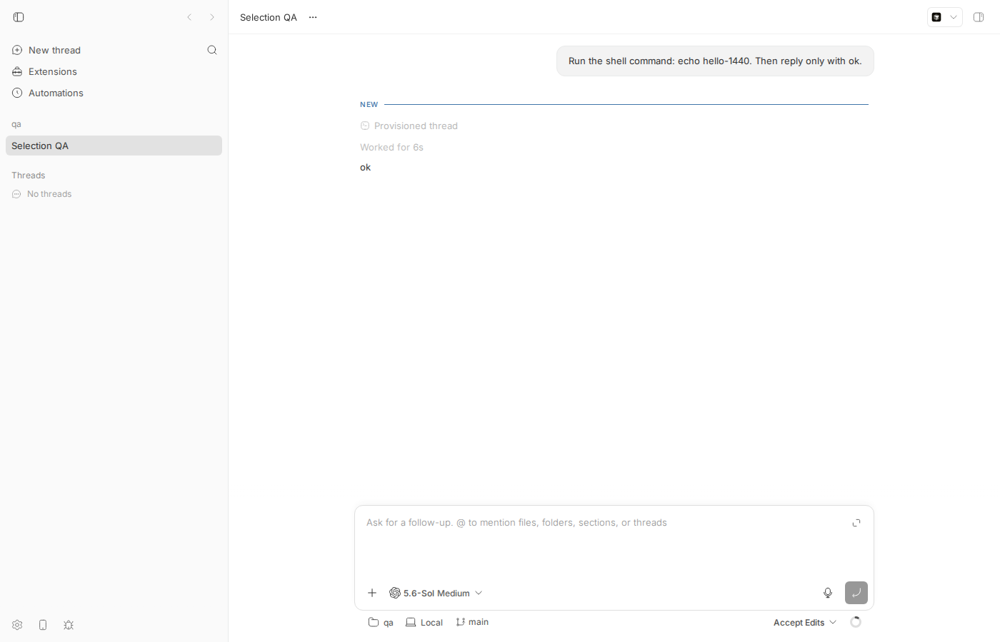
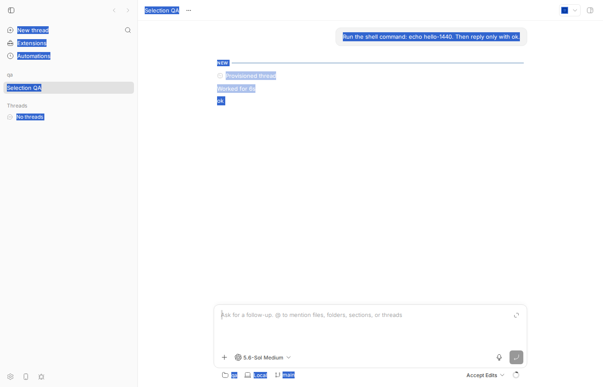
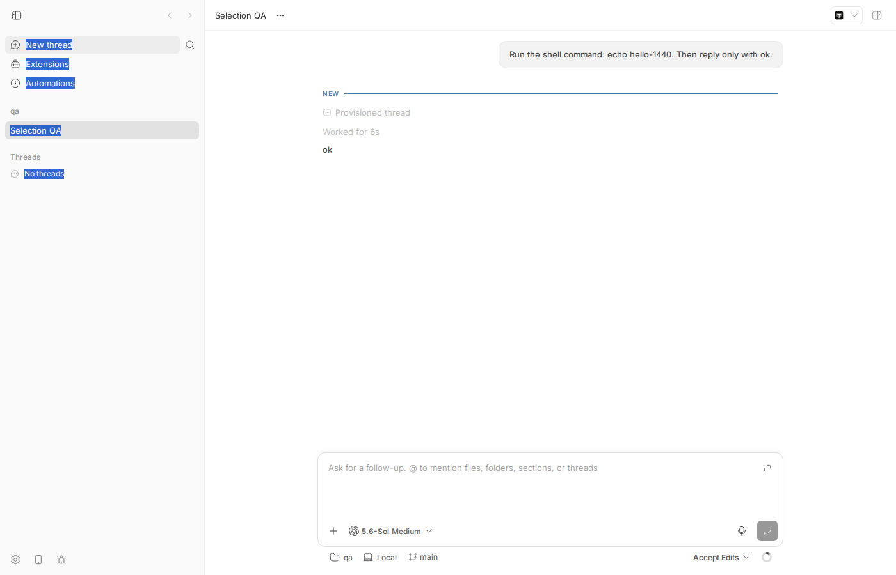
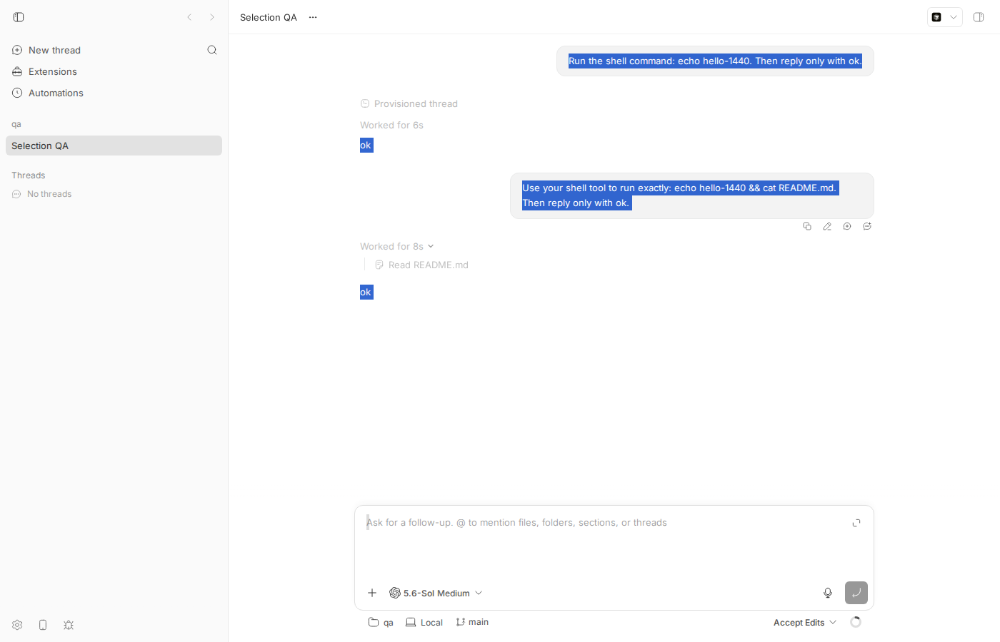
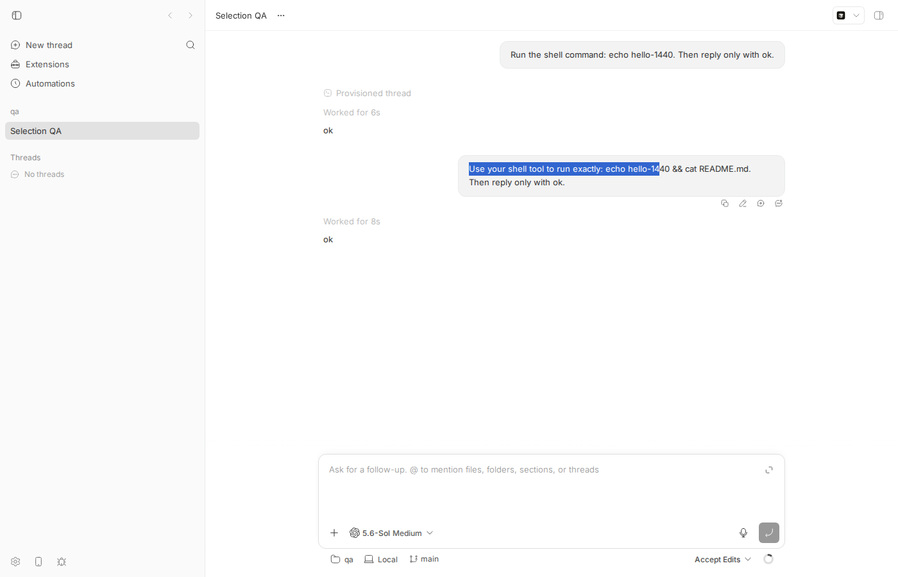

#1440 · Prevent app chrome from being included in text selection
TL;DR
Plain-language framing. In a normal web page, all text is selectable: dragging the mouse or pressing Cmd/Ctrl-A highlights everything, including navigation labels and button captions. Native desktop apps do not do that; only "document" content (messages, code, logs) is selectable. bb's app is a web page inside Electron, and it never tells the browser which parts are interface and which parts are content.
The issue is really a feature request phrased as a bug, and it is accurate. On the base commit, clicking empty sidebar space and pressing Ctrl-A selects New thread, Extensions, Automations, the thread names, Settings, Report a bug, the thread title, the composer footer labels (qa, Local, main) and even the visually hidden Toggle Sidebar label, alongside the actual conversation. Dragging across the sidebar highlights its labels too. Root cause: apps/app/src/app.css sets no user-select policy at all, so every element keeps the browser default (auto = selectable); the only select-none in the codebase is sprinkled ad hoc on drag handles and menu items.
PR #1428 (by the issue author, agent-generated) flips the default: body.bb-app-shell { user-select: none } and a per-component select-text opt-in list. It does fix the two headline symptoms (Ctrl-A from the shell and sidebar drags now select nothing), and its 129 unit tests pass. But when I drove the PR build in Chromium it introduces two behaviors that are worse than the original: (1) a drag that starts in the empty gutter beside a message no longer selects anything (on main it does), and (2) Ctrl-A on the thread now paints all messages as highlighted while Ctrl-C copies nothing (the clipboard is left untouched). Both follow from Blink's handling of user-select: none; I reduced (2) to a 6-line standalone HTML page. The PR also leaves diagnostic text such as the thread Info panel's Directory /tmp/1440-qa unselectable, is 66 commits behind main and conflicts with it. Verdict on the PR: REQUEST CHANGES.
Claims vs findings
| Claim | Status | Evidence |
|---|---|---|
| Cmd-A with focus outside an editable selects sidebar items, buttons, labels and other chrome | Verified | Base build, click empty sidebar space, Ctrl-A: getSelection().toString() = "New thread … Extensions … Automations … Selection QA … No threads … Settings … Report a bug … Toggle Sidebar" (db-repro-main.out, screenshot). |
| Clicking and dragging creates selections across the sidebar | Verified | Base build, drag from empty sidebar space up over the labels: selection = "New thread\n\n\nExtensions\n\nAutomations\nSelection QA\nNo threads" (db-drag-main.out, screenshot). Section headers qa/Threads are not selected because they already carry select-none when drag bindings are active (SidebarSectionRow.tsx:129). |
| "the area below the composer" is selectable | Verified | The composer footer labels qa, Local, main appear in the Ctrl-A selection (screenshot above, bottom). |
| Inputs / contenteditable keep native selection today | Verified | Nothing in the app touches user-select for editors on the base commit; Ctrl-A inside the prompt editor selects only the draft (verified on both builds). |
| Reported for the desktop (Electron) app | Not exercised in Electron | I drove the web app in headless Chromium 145 (Playwright). Electron embeds the same Blink engine and the same index.html/app.css; nothing in the desktop shell touches selection. Treated as equivalent; see caveats. |
| Issue: "Related pull request: #1428" fixes it | Partly | #1428 fixes the two headline symptoms but regresses gutter drags and Ctrl-A/Ctrl-C on content; see PR review. |
{kind=link}
{kind=link}
Environment
- bb
16ceb3a54(main, 2026-08-18) for the repro; PR #1428 head65e7f0e30(branchbb/fix-cmd-a-app-wide-text-selection-thr_n3m9kkh45r, based on5ecdd69ec, 66 commits behind the base commit) for the PR review.origin/mainata108fa7efcontains no change toapp.css/user-select; not fixed on main. - Linux 7.0.0-29-generic, node v24.18.0, codex-cli 0.147.0 (provider
codex, model gpt-5.6-sol; only used to put two messages and one tool call in a thread). - Dev instance from worktree
/home/sawyer/projects/bb/.claude/worktrees/wf_242c3e11-a10-45: app:13365, server:21365, host daemon:29365, data dir/home/sawyer/.bb-dev/projects-bb-.claude-worktrees-wf_242c3e11-a10-45-74f7847d4f19. Projectproj_xp7gwkuyi4(local path/tmp/1440-qa), threadthr_2wxsqrnrwx. - Browser: HeadlessChrome/145.0.7632.6 via the
dev-browserCLI (Playwright). Scripts under 1440/repro/ are run withdev-browser --headless run <file>. Keyboard:Control+Astands in for Cmd-A.
Minimal reproduction
- Build and start a dev instance:
pnpm install --frozen-lockfile --prefer-offline && pnpm exec turbo run build && scripts/bb-dev-app current. Note the App URL. - Create a scratch repo and project, spawn one thread so the timeline has content (any provider, prompt "Reply only with ok."). Wrapper: 1440-bb.sh (
BB_REPO=<worktree>). - Open the thread in Chromium (or the desktop app). Click an empty part of the sidebar. Press Cmd/Ctrl-A.
- Alternatively, press the mouse in empty sidebar space and drag up over the labels.
Automated version of steps 3–4 (edit the URL/thread id at the top): db-repro-main.js and db-drag-main.js. Output on the base commit:
$ dev-browser --headless run db-repro-main.js
--- after Ctrl+A ---
{
"activeElement": "BODY",
"rangeCount": 1,
"text": "\n\n\nNew thread\n\n\nExtensions\n\nAutomations\nSelection QA\nNo threads\n\nSettings\nRemote access\nReport a bug\nSelection QA\n\n\n\nRun the shell command: echo hello-1440. Then reply only with ok.\n\n\n\n\n\nNEW\n\nProvisioned thread\n\nWorked for\n6s\nok\n\n\n\n\n\nWorking...\n\n\n\n\n\n\nProject:\nqa\nEnvironment:\nLocal\n\nmain\nToggle Sidebar",
"bodyUserSelect": "auto",
"sidebarLabelUserSelect": "auto"
}
$ dev-browser --headless run db-drag-main.js
--- selection after dragging from empty sidebar space up over the labels ---
"New thread\n\n\nExtensions\n\nAutomations\nSelection QA\nNo threads"
Expected (issue): only content is selected; sidebar and interface labels are not. Actual: every label above is in the selection; computed user-select on body and on the sidebar labels is auto.


select-none).
Root cause
There is no selection policy. index.html tags the shell (apps/app/index.html#L93: <body class="bb-app-shell">), and app.css uses that class only for height/overflow (apps/app/src/app.css#L37-L55). Nothing in apps/app/src or the shared UI package sets user-select on the shell, sidebar, headers or composer chrome; a search finds only ad-hoc select-none on drag handles, picker rows and menu items (for example SidebarSectionRow.tsx#L129, ThreadRow.tsx#L647) and one select-text on ExpandableLine. With the CSS default user-select: auto, every text node in the document participates in drag selection and Select All, so the browser treats the whole app as one document. That is exactly the symptom.
Deeper point that shapes any fix: bb's content is a set of islands (messages, tool output, diffs, previews) embedded in chrome, and there is a contenteditable prompt box below the timeline. Blink's behavior for user-select: none has two consequences that a "none by default" policy must design around (both measured below): a mouse drag whose mousedown lands on a none element never starts a selection, and Select All can end up as an empty selection when the last selectable content in DOM order is followed only by an editable and non-selectable chrome.
Proposed fix (first principles)
I am confident about the cause and about the shape of the fix, less so about the exact Blink Select All edge (see next experiment).
- Adopt a shell-level policy in
app.cssas #1428 does (body.bb-app-shell { user-select: none }, editors forced back totext), because chrome is spread over dozens of components and opt-out per component will never be complete. - Make the opt-in boundary the content column, not each leaf. In the thread view, put
select-texton the timeline scroll container (the element that contains the message rows and their gutters), and mark the chrome inside it (tool-call headers, action bars, "Worked for" rows, timestamps)select-none. Then a drag that starts in the gutter next to a message still starts on a selectable element and works as it does today, and multi-message drags keep working. #1428's leaf-level opt-in (eachSelectableMessageProse, eachpre) is what breaks gutter drags. - Extend the opt-in to diagnostic values the issue itself lists: thread Info panel values (directory, branch, git status), thread title in the header, machine/host ids and error strings in Settings, toast bodies. #1428 leaves these at
none. - Cover the two Blink behaviors with a real-browser test (Playwright/Ladle, not jsdom): (a) drag from gutter into a message selects text, (b) Cmd-A after clicking a message and Cmd-C yields the message text, (c) Cmd-A from the sidebar yields no chrome labels, (d) Cmd-A in the editor selects only the draft. jsdom class-presence tests (what #1428 adds) cannot catch either regression.
- Not confident yet on (b): Select All collapses to an empty range when the only things after the last selectable content are the composer editable and
nonechrome (minimal cases N/P/Q vs. T in db-minimal-chromium5.out). Next experiment: read Blink'sFrameSelection::SelectAll/AdjustSelectionToAvoidCrossingEditingBoundariesand try (i) a selectable element after the composer in DOM order, (ii)user-select: containon the timeline container, (iii) rendering the composer before the timeline in DOM order with CSS ordering. Whatever lands must be verified in the real browser, because the visual highlight and the copied text disagree.
Risks: iOS Safari long-press selection and the sidebar swipe logic in SelectableMessageProse depend on where selection can start; verify in iOS Simulator per AGENTS.md. Any nested-control rule (label, summary forced to none inside content) can hit Markdown task lists and <details>.
PR review — #1428 "Prevent text selection in app chrome and non-content controls"
What it changes (full diff, +270/−20, 2 commits, head 65e7f0e30): adds three rules to app.css — body.bb-app-shell { user-select: none }; body.bb-app-shell :where(input, textarea, [contenteditable]:not([contenteditable="false"])) { user-select: text }; and inside any .select-text region, button/label/select/summary and common ARIA roles back to none unless they carry .select-text themselves. Then it adds the Tailwind select-text utility to 15 components (MarkdownPreview, SelectableMessageProse, EventCodeBlock, TerminalOutputBlock, ToolCallDetailBlock, GitDiffCardBody, FilePreview code/CSV, PluginPanelView body, QueuedMessagesList preview, approval detail lists, AddMachineDialog command, OnboardingFlow login command, provider install log, error-boundary stack) plus jsdom tests asserting the class is present, and a test that greps app.css for the three rules.
Does it address the root cause? Yes in direction: it introduces the missing policy at the shell level, which is the right layer (pure app CSS; no server/daemon boundary or protocol involved). The compiled CSS carries the -webkit-user-select prefixes (checked in the Vite output), so it is not Chromium-only. On the PR build: Ctrl-A from empty sidebar space and drags across the sidebar select nothing; computed user-select is none on body/sidebar/header/footer labels and text on message prose and the editor; Ctrl-A inside the editor selects the draft only (db-probe-pr.out).
Findings
| # | Severity | Where | Finding |
|---|---|---|---|
| 1 | High (regression) | apps/app/src/app.css:47-49 + leaf-level opt-ins (SelectableMessageProse.tsx:501, markdown-preview.tsx:1633) | Dragging from the empty gutter beside a message into its text no longer selects anything. Base: drag from 200 px left of the user message → "Use your shell tool to run exactly: echo hello-14". PR: same gesture → "". Blink does not start a selection when mousedown hits a user-select: none element; because only the prose leaf is opted in, the gutter, row wrapper and timeline are all none. Reproduced independent of bb (db-minimal-chromium.out: "drag from none-area into island" = ""). Users habitually start selections in the margin. Fix: opt in the content column, not the leaves (see Proposed fix). |
| 2 | High (regression, silent) | apps/app/src/app.css:47-49 | Cmd-A on the thread paints every message as highlighted, but Cmd-C copies nothing. PR build: click inside a message, Ctrl-A → getSelection().type === "Range", toString() === ""; Ctrl-C leaves the clipboard unchanged (paste into the editor yields the previous clipboard content), while the screenshot shows all messages highlighted (screenshot, db-probe-copy-pr.out). Base: same gesture copies the whole page. The issue's own acceptance criterion says content surfaces must still be selectable via Cmd-A. Reduced to a standalone page: body{user-select:none} + selectable island + a later contenteditable → Select All is empty (case N/B), whereas the same page with a selectable node after the editable copies fine (case T) — db-minimal-chromium5.out. The PR's Electron QA did not test Cmd-A + Cmd-C. |
| 3 | Medium | opt-in list | Diagnostic values the issue lists as "must remain selectable" are none on the PR build: thread Info panel Directory /tmp/1440-qa, git status text, the thread title in the header, every text node on /settings (20 leaf text nodes, 0 with text) — db-probe-pr5.out. Toast bodies and settings error strings were not opted in either (by reading the diff). This is the failure mode SlopCop flagged; the second commit only added the four surfaces it named. |
| 4 | Medium | branch state | mergeable: CONFLICTING against main (conflict in ThreadPendingInteractionBanner.tsx, which was refactored on main after the PR's base 5ecdd69ec, 66 commits behind). Needs a rebase; anything added to the timeline in those 66 commits is not covered by the opt-in list. |
| 5 | Low | apps/app/src/app.css:62-80 | The nested-control rule forces label and summary to none inside content. Markdown task-list items and <details> summaries rendered by MarkdownPreview are user-authored content and will drop out of copied text. Not verified live; flagged from the selector. |
| 6 | Low (test quality) | apps/app/src/app-selection.test.ts, the .closest(".select-text") assertions | Tests assert that a CSS string exists and that a class name is present. They cannot fail for either regression above and would pass if select-text stopped meaning anything. AGENTS.md asks for tests where bugs can hide; the bugs here are in browser behavior, which needs a real-browser test. |
| 7 | Info | PR description | Claims "live Electron QA … selecting the region omitted the nested control label" — consistent with what I measured; but no drag-from-gutter or Cmd-A/Cmd-C check was reported. |
{kind=link}
No protocol, server or daemon surfaces are touched, so no HOST_DAEMON_PROTOCOL_VERSION concern. No casts or unknown smuggling. No security implications.
Tests run
$ gh pr checkout 1428 -b pr-1428 # head 65e7f0e30
$ cd apps/app && pnpm exec vitest run src/app-selection.test.ts src/components/promptbox/banner/QueuedMessagesList.test.tsx \
src/components/thread/pending-interactions/ThreadPendingInteractionBanner.test.tsx src/components/ui/event-code-block.test.tsx \
src/components/ui/markdown-preview.test.tsx src/components/thread/timeline/SelectableMessageProse.events.test.tsx \
src/components/dialogs/AddMachineDialog.test.tsx src/components/AppErrorBoundary.test.tsx \
src/components/secondary-panel/FilePreview.test.tsx src/components/plugin/plugin-slot-mounts.test.tsx
Test Files 10 passed (10)
Tests 129 passed (129)
Live probes on the PR build (dev instance restarted on the PR branch): db-probe-pr.js → out; db-probe-copy.js → out; db-probe-pr5.js → out. Same gestures on the base build: db-probe-base-gutter.js → out.
PR build (65e7f0e30): --- drag from gutter (200px left of message) across message text --- "" --- drag starting inside message text --- "un the shell command: echo hello-1440. Then reply only with ok" ctrl+a selection toString: "" --- Ctrl+A after clicking in message -> clipboard text (pasted into editor) --- "Use your shell tool to run exactly: echo hello-14" <- previous clipboard content, i.e. Ctrl+C copied nothing Base build (16ceb3a54): --- drag from gutter (200px left of message) into message text --- "Use your shell tool to run exactly: echo hello-14" --- Ctrl+A after clicking in message -> clipboard text (pasted into editor) --- "\n\n\nNew thread\n\n\nExtensions\n\nAutomations\nSelection QA\nNo threads\n\nSettings\nRemote access\nReport a bug\nSelection QA\n\n\n\nRun the shell command: echo hello-1440. Then reply only with ok. …"

getSelection().toString() is empty and Ctrl-C copies nothing.
Verdict: REQUEST CHANGES. Right layer and right idea, but as written it trades one selection bug for two more visible ones (findings 1 and 2), misses content the issue explicitly protects (3), and cannot merge (4).
Related issues
- #1428 (linked PR, reviewed above). No other open issues on selection found in the tracker at the time of writing; the SlopCop review on #1428 raised the incompleteness of the per-component opt-in list, which finding 3 confirms still holds.
Appendix
Minimal Blink evidence (independent of bb)
db-minimal-chromium.js / 3 / 4 / 5, outputs alongside. Key lines:
drag from none-area into island: ""
drag starting inside island: "island content text"
A flat (body none, island) {"text":"island content text", …}
B flat+editable (island then contenteditable) {"text":"", "ao":0, "fo":0}
N body none, island, editable; click island {"text":"", …}
T … editable, trailing island after editable {"text":"island content text\nx\ntail", …}
UA: HeadlessChrome/145.0.7632.6
Commands
git checkout 16ceb3a54
pnpm install --frozen-lockfile --prefer-offline
pnpm exec turbo run build
scripts/bb-dev-app current # app :13365 server :21365 daemon :29365
git -C /tmp/1440-qa init && … commit
curl -s -X POST http://localhost:21365/api/v1/projects -H 'content-type: application/json' \
-d '{"name":"qa","source":{"type":"local_path","path":"/tmp/1440-qa","hostId":"host_gdbzyigfvf"}}'
BB_REPO=… 1440-bb.sh thread spawn --project proj_xp7gwkuyi4 --provider codex --permission-mode accept-edits \
--title "Selection QA" --prompt "Run the shell command: echo hello-1440. Then reply only with ok." --json
BB_REPO=… 1440-bb.sh thread tell thr_2wxsqrnrwx "Use your shell tool to run exactly: echo hello-1440 && cat README.md. Then reply only with ok."
dev-browser --headless run db-open.js / db-repro-main.js / db-drag-main.js # base
gh pr checkout 1428 -b pr-1428 && scripts/bb-dev-app current # PR build
cd apps/app && pnpm exec vitest run <10 PR test files>
dev-browser --headless run db-probe-pr.js / db-probe-pr2.js / db-probe-pr3.js / db-probe-pr4.js / db-probe-copy.js / db-probe-pr5.js
curl -s http://localhost:13365/src/app.css | grep -o '.\{80\}user-select[^;]*;' # -webkit- prefixes present
git checkout 16ceb3a54 && scripts/bb-dev-app current
dev-browser --headless run db-probe-base-gutter.js
dev-browser --headless run db-minimal-chromium*.js
pnpm dev:stop
Logs
- install.log, build.log, devapp.log (base), devapp-pr.log (PR), pr-tests.log, pr1428.diff.
- PR merge check:
git merge --no-commit 16ceb3a54on the PR branch →CONFLICT (content): Merge conflict in apps/app/src/components/thread/pending-interactions/ThreadPendingInteractionBanner.tsx(aborted).